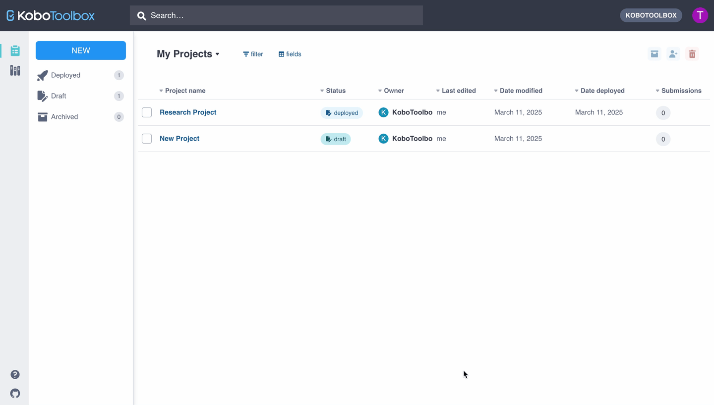
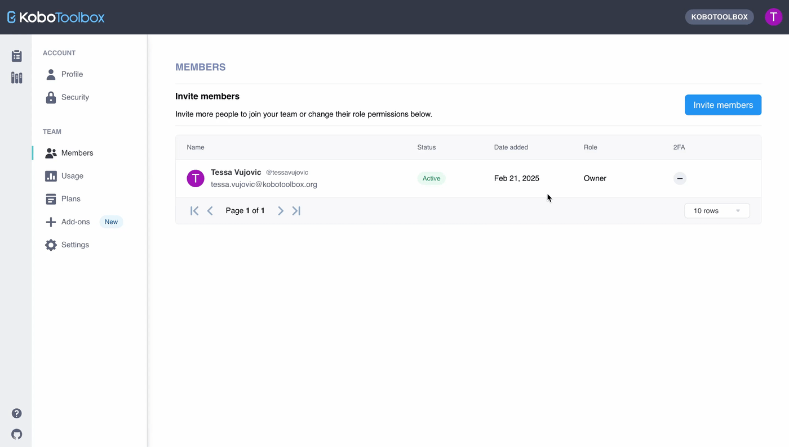
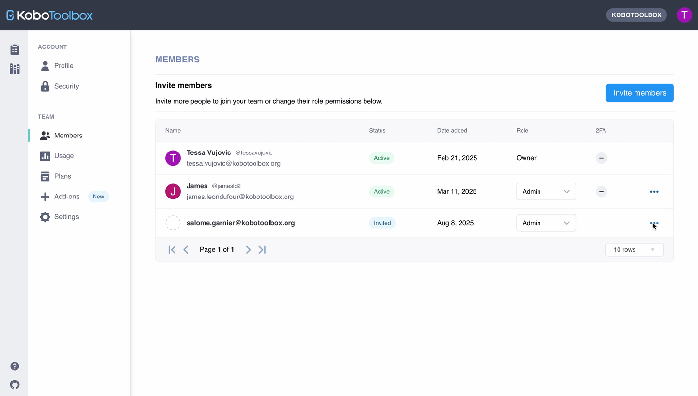
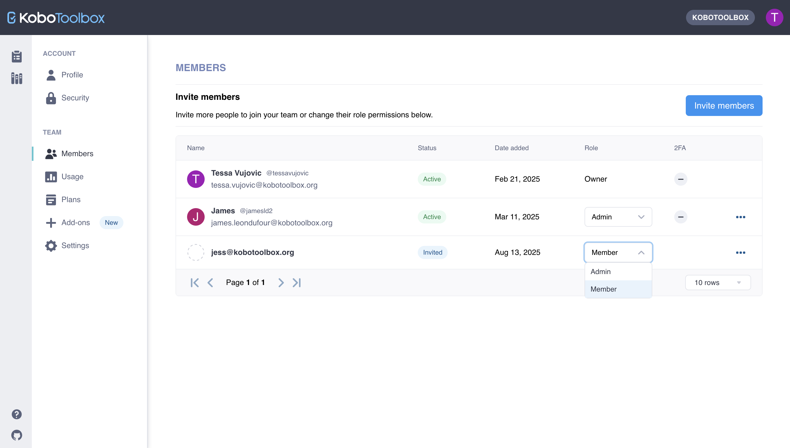
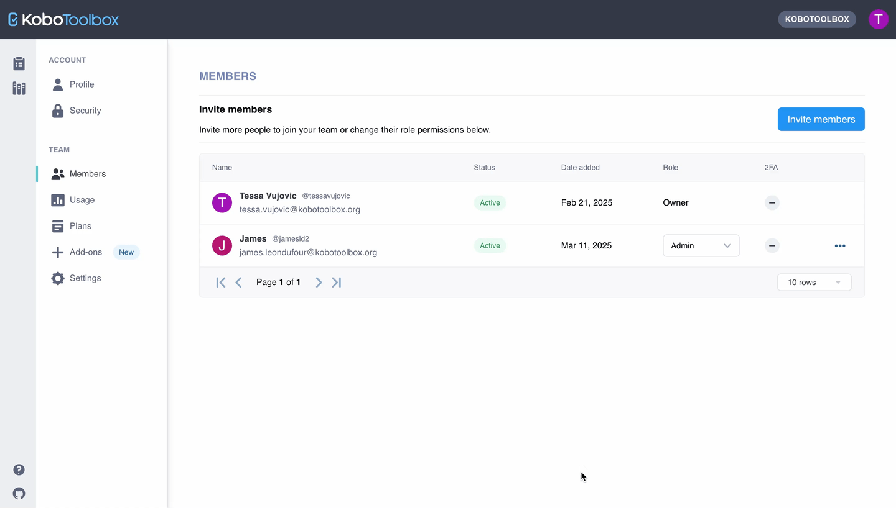

Parcourez la base de connaissances, explorez nos ressources et visitez notre Forum communautaire pour des informations plus détaillées
Dernière mise à jour : 3 oct. 2025
La fonctionnalité de gestion d’équipe vous permet de centraliser la gestion des projets et des utilisateurs pour améliorer la supervision et la collaboration au sein de grandes équipes distribuées. Lorsque vous ajoutez des utilisateurs à votre équipe dans KoboToolbox, vous pouvez consulter et gérer leurs projets. Les utilisateurs de votre équipe auront accès aux quotas d’utilisation de votre plan Teams ou Enterprise, et la propriété de leurs projets sera transférée à votre équipe.
Cet article aborde les points suivants :
La propriété des projets, les rôles et les vues de projets pour les équipes
Comment inviter des utilisateurs à rejoindre votre équipe et leur attribuer des rôles
Comment retirer des utilisateurs de votre équipe
Remarque : Cette fonctionnalité est actuellement disponible uniquement pour les utilisateurs disposant d'un plan Teams ou Enterprise.
Un aspect essentiel de la fonctionnalité de gestion d’équipe est que la propriété des projets est centralisée au sein de votre équipe.
Tout nouveau projet créé par un utilisateur de votre équipe appartient automatiquement à votre équipe.
Lorsqu’un utilisateur rejoint une équipe dans KoboToolbox, tous les projets dont il est propriétaire sont transférés à l’équipe.
En centralisant la propriété des projets, la fonctionnalité de gestion d’équipe vous offre une meilleure supervision et une gestion d’équipe plus efficace.
Remarque : Cette fonctionnalité concerne uniquement la propriété des projets. Elle n'affecte pas les droits d'accès au partage de projets. Les droits d'accès configurés précédemment ne seront pas modifiés lors du transfert de propriété d'un projet à une équipe. Si vous disposez de permissions de gestion sur un projet, vous continuerez à les avoir et pourrez partager le projet comme d'habitude. Pour plus d'informations, consultez l'article Droits d'accès au niveau de l'utilisateur.
Il existe trois rôles différents pour les membres d’une équipe, chacun avec des fonctions et des capacités spécifiques.
Propriétaire : Le propriétaire peut consulter et gérer tous les projets et tous les utilisateurs de l’équipe, ainsi que le plan et les paramètres. Chaque équipe dans KoboToolbox ne peut avoir qu’un seul propriétaire.
Vues et gestion des projets : Le propriétaire peut consulter tous les projets de l’équipe et dispose de toutes les permissions de gestion de projets.
Transferts de propriété de projets : Le propriétaire peut transférer la propriété de n’importe quel projet de l’équipe à un utilisateur extérieur à l’équipe.
Gestion des utilisateurs : Le propriétaire peut ajouter ou retirer des membres de l’équipe et leur attribuer différents rôles.
Gestion du plan et de l’utilisation : Le propriétaire peut gérer le plan et les paramètres de l’équipe et consulter la page d’utilisation.
Administrateurs : Les administrateurs peuvent consulter et gérer tous les projets et tous les utilisateurs de l’équipe, ainsi que les paramètres. Chaque équipe peut avoir un nombre illimité d’administrateurs.
Vues et gestion des projets : Les administrateurs peuvent consulter tous les projets de l’équipe et disposent de toutes les permissions de gestion de projets.
Gestion des utilisateurs : Les administrateurs peuvent ajouter ou retirer des membres de l’équipe et leur attribuer différents rôles.
Gestion du plan et de l’utilisation : Les administrateurs peuvent gérer les paramètres de l’équipe et consulter la page d’utilisation.
Membres : Les membres de l’équipe continuent d’avoir un accès complet à leur compte KoboToolbox, avec l’avantage de bénéficier des quotas d’utilisation de leur équipe. Les membres peuvent créer de nouveaux projets et utiliser toutes les fonctionnalités de KoboToolbox comme auparavant. Les équipes peuvent avoir un nombre illimité de membres.
Remarque : Un utilisateur ne peut appartenir qu'à une seule équipe à la fois.
Le propriétaire et les administrateurs de l’équipe ont accès à la vue Projets de l’équipe ainsi qu’à leur vue personnelle Mes Projets.
Par défaut, la vue Mes Projets est affichée. En utilisant le menu déroulant de sélection de vue, vous pouvez basculer vers la vue Projets de l’équipe.
La vue Projets de l’équipe inclut tous les projets de tous les utilisateurs de l’équipe.
Les membres de l’équipe n’ont accès qu’à leur vue personnelle Mes Projets, qui inclut les projets qu’ils ont créés et les projets partagés avec eux. Ils n’ont pas accès à la vue Projets de l’équipe.

Le propriétaire et les administrateurs de l’équipe peuvent inviter des utilisateurs à rejoindre l’équipe, leur donnant ainsi accès aux quotas d’utilisation de l’équipe et centralisant la gestion des projets.
Pour inviter des utilisateurs à rejoindre votre équipe dans KoboToolbox :
Accédez à vos Paramètres du compte.
Naviguez vers la page Membres sous ÉQUIPE.
Cliquez sur le bouton Inviter des membres.
Saisissez le nom d’utilisateur ou l”adresse email de la personne que vous souhaitez inviter dans votre équipe et attribuez-lui un rôle. Cliquez sur Envoyer l’invitation.
Les invitations ne sont pas limitées aux utilisateurs disposant du nom de domaine email de votre organisation. Vous pouvez inviter des utilisateurs avec n’importe quelle adresse email valide.
L’utilisateur recevra une invitation par email pour rejoindre votre équipe. S’il ne possède pas encore de compte KoboToolbox, il sera invité à en créer un.
Lorsqu’il accepte l’invitation, il accède à votre équipe selon le rôle qui lui a été attribué. Tous les projets dont l’utilisateur était précédemment propriétaire seront transférés à votre équipe.

Une invitation à rejoindre une équipe expire 14 jours après son envoi. Vous pouvez renvoyer l’invitation directement depuis le menu Plus d’actions de la vue Membres. Vous pouvez également annuler une invitation en utilisant l’option Supprimer l’invitation dans le menu Plus d’actions.

Remarque : Si vous avez des projets existants dont vous ne souhaitez pas transférer la propriété à votre équipe, nous vous recommandons de créer un compte séparé et de transférer la propriété de ces projets vers ce nouveau compte avant d'accepter l'invitation à rejoindre l'équipe.
Le propriétaire et les administrateurs de l’équipe peuvent attribuer et modifier les rôles des utilisateurs de leur équipe dans la vue Membres.
Lorsque vous changez le rôle d’un membre en administrateur, vous lui accordez l’accès à la vue Projets de l’équipe ainsi que les permissions de gestion des projets et des rôles. Vous lui accordez également la possibilité de gérer les paramètres et de consulter la page d’utilisation.

Le propriétaire et les administrateurs de l’équipe peuvent retirer des utilisateurs de l’équipe. Lorsqu’un utilisateur est retiré de votre équipe, il n’a plus accès aux projets appartenant à l’équipe ni aux quotas d’utilisation de l’équipe.
Pour retirer un utilisateur de votre équipe :
Accédez à vos Paramètres du compte.
Naviguez vers la page Membres sous ÉQUIPE.
Cliquez sur l’icône Plus d’actions pour l’utilisateur que vous souhaitez retirer.
Sélectionnez Supprimer.
Confirmez et finalisez l’action en cliquant sur Supprimer le membre.

Chaque équipe dans KoboToolbox ne peut avoir qu’un seul propriétaire. Le propriétaire a été déterminé au préalable par votre organisation lors de la souscription à votre plan.
Pour transférer la propriété de votre équipe à un autre utilisateur, veuillez contacter notre équipe d’assistance.
Avez-vous trouvé ce que vous cherchiez ? La traduction était-elle claire ? Manquait-il quelque chose ?
Partagez vos commentaires pour nous aider à améliorer cet article !
KoboToolbox est maintenu par Kobo Inc.